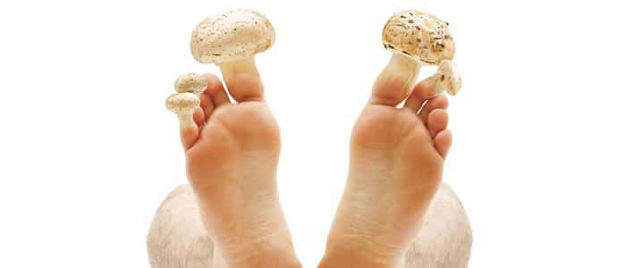
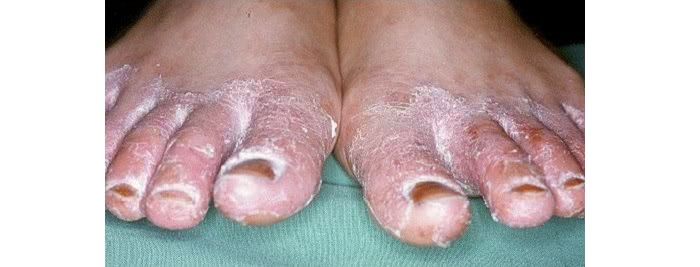
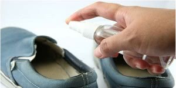

Статия, която са прочели
повече от 16 730 потребители
повече от 16 730 потребители
Днес ще разгледаме проблема относно гъбичките на пръстите на краката и на ръцете. Гъбичките обикновено засягат пръстите на краката ни, в редките случаи на ръцете. Често гъбичките на краката се появяват след посещение на обществени места, където се налага да се ходи бос — басейни, сауни и парни бани.
Гъбичките, също така, могат да се появят и у офисните служители. На работното място се налага да изкарвате по 8-12 часа в затворени обувки, естествено краката започват да се потят, вследствие на което се зараждат бактерии, които се размножават в благоприятните за тях условия. С всеки изминал ден ситуацията може само да се влошава, трябва да се вземат спешни мерки в борбата с гъбичките, за да се предотвратят усложнения.
Една от жителките на нашия град също беше нападната от тая напаст. Развитието на гъбичките започнало със сърбеж, който е бил между пръстите, след известно време започнаха да се образуват мехури. Гъбичките на краката вършеха своята разрушителна работа.
Тя, разбира се, е предприела съответните действия, ходила на лекар, но лечението не дало никакви резултати. Освен всичко това, гъбичките се появиха и на стъпалата. А след това дори и краката започнаха да отичат и да болят. И някъде на този етап, тя се обърна към мен. И аз и предписах вече провереното народно средство.
Опитах достатъчно много рецепти по народни рецепти. Много от тях са безполезни, но има и такива, които си струват. Ето един от тях. Вътрешно трябва да се пие билков отвар от: листа от репей, градински чай, живовляк, бял равнец. Вечерта заварете една чаена лъжичка от тази смес с една чаша вряла вода, а сутринта изпийте на гладно 100 грама от отвара.
Отварата от билки се приготвя за три дни, дръжте я в хладилника пийте три пъти на ден преди ядене. Точно такава настойка, само че в по-големи количества се използва и за вани за краката. Грейте краката си в тази настойка преди лягане. След като погреете краката си, почистете петите си, срежете ноктите, подсушете ги. Сутрин изплаквайте краката си със студена вода, за да подобрите циркулирането на кръвта.
В резултат на това лечение може да се появи подобрение, но от гъбичките няма да можете да се отървете завинаги. Затова реших да помогна на тази жена с помощта на доказан начин и ние заедно поръчахме против гъбички . Спазвайки всички мои препоръки, тя се излекува от гъбичките за 6 седмици.
Това е достатъчно просто, но в същото време мощно средство. По-лесно е да се предпазиш от болестта, отколкото да се лекуваш, особено що се отнася до увреждането на кожата на пръстите и стъпалата. При посещение на обществени места вида на сауни, басейни и бани, използвайте гумени чехли. След посещението на тези места, измийте обилно с вода и сапун краката си. Тези прости техники за профилактика ще Ви помогнат да се предпазите от зловредните гъбички.
 Освен обработката на краката трябва още и редовно да обработвате обувките си. В края на краищата, гъбичките са състояние да живеят в обувките и тогава, при използването им, Вие отново ще се окажете заразени с оцелелите спори.Обувките се обработват с 25% разтвор на формалин. Трябва да забършете обувките си отвътре и да оставите кърпата в обувките. Да сложите обувките в торбичка и да завържите здраво. Дръжте ги така не по-малко от две денонощия. След това проветрете обувките три денонощия, за да излезе миризмата на формалина.
Обувките също така могат да се обработват и с 1% разтвор на Хлорхексидин (Сhlorhexidinum), тогава цялата процедура отнема няколко часа. Или използвайте 40% оцетен разтвор, приготвен от оцетна есенция.
Всичко най-просто най-често е и най-ефективно. В случая с гъбичките сега дори няма нужда да търси нещо и да се пие. Достатъчно е просто да миете краката си всяка вечер с обикновен сапун, а след това да намажете с засегнатата област. Това е всичко! В рамките на седмица-две гъбичките ще «изгорят». Вече е тестван на хиляди души, които са ми написали благодарствени думи.
Разказах всичко, което знаех за гъбичките и за това как да се борим с тях. Използвайте моите прости съвети, които могат да Ви спасят от появата на гъбички и лично препоръчвам наистина помага! БЪДЕТЕ ЗДРАВИ!
За днес посетиха сайта
последното посещение е било 2 минути назад
Уважаеми абонати! Искаме да Ви помолим да се включите в анкетата ни, за да разберем какви методи за лечение на гъбичките на краката сте използвали и, какво можете да препоръчате на другите.
Какво използвахте и какво можете да препоръчате за борба с гъбичките по краката?
Анонимно гласуване
Гласували 3894 човека
Коментари към статията:
Моля пишете без нецензурни думи и реклама. Благодаря!
Мария
Интересува ме такъв въпрос, дали много сухата кожа на петите и възглавничките на пръстите и пукнатините на тях са гъбични заболявания? Никакви супер подхранващи крем и ванички за крака не ми помагаха, сега мисля да опитам от гъбички - може пък да помогне...
Diаna
На мен вече ми помага крем против гъбички. Поръчах го съвсем наскоро. Преди това използвах друг крем, но той особено не се справи с моя проблем. Буквално преди няколко месеца ми се появиха гъбички след почивка сред природата.
Svat
Чувала съм, че прополиса много добре помага срещу гъбички, така че, когато го видях в състава на крем, веднага си го поръчах.
Людмила
Момичета, моля нека някой да напиши за резултатите си. Аз толкова много неща опитах, нищо не помага. А не искам за пореден път да попадана на безполезен крем.
Гост
При мен има резултат! Жълтите петна се махнаха, кожата стана по-мека и този дразнещ сърбеж изчезна буквално след месец. Като цяло засега съм доволна, да видим какво ще бъде по-нататък.
Людмила
Много благодаря! Страшно ми е, разбира се, но ще опитам. Току виж и на мен може да ми помогне.
Гост
Имам нещо подобно на гъбички. Не знам да поръчвам ли или не.. Може това и да не са гъбички.
Статистика на сайта
| Посетители за днес: | 15762 чевека |
| Сега на сайта: | 136 чевека |
| Поръчали крем: | 22 чевека |